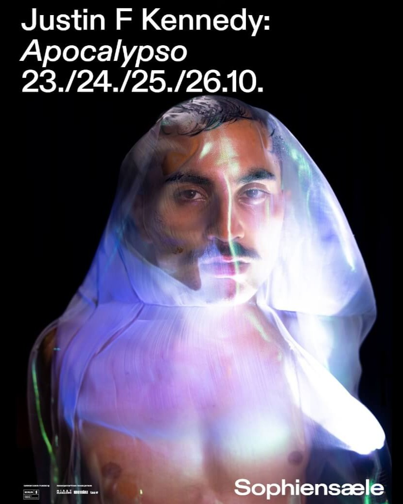
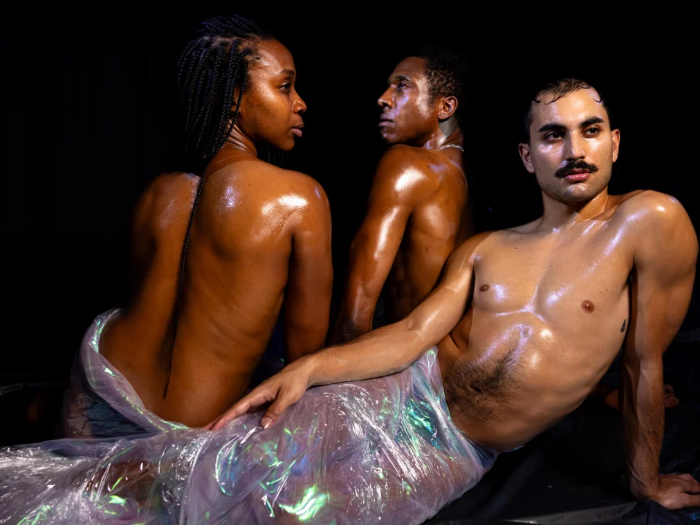
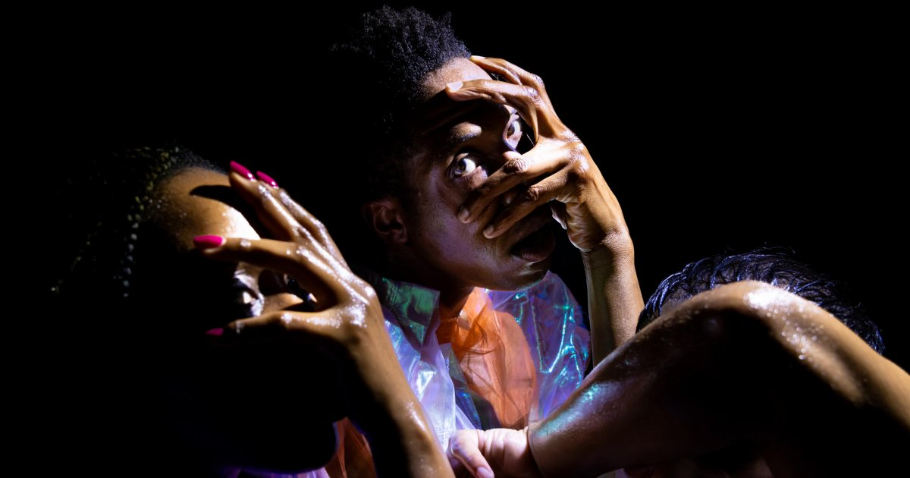
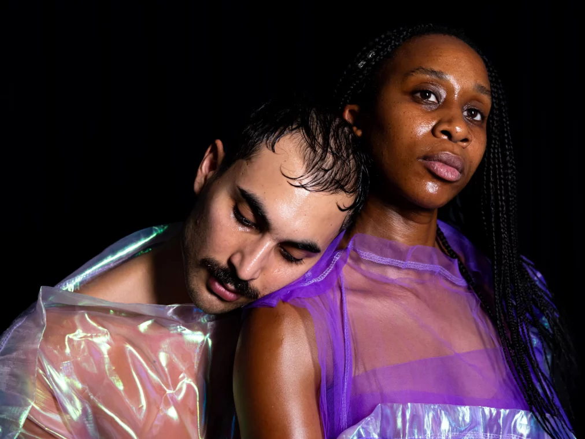

When does the swarm become the horde? What do zombies teach us about organizing? And what can robots show us about care?
Apocalypso is choreography and speculative opera, exploring apocalypse through an Afro-pessimist lens. Drawing from Tidalectics, coined by Barbadian poet Kamau Brathwaite, the performance weaves together contemporary Caribbean mythology with intersectional and ecocritical perspectives. Set after the fictional Apocalypso of Internal Combustion, hybrid beings like mermaids, zombies, and animatrons rise to embody queer Black futures, Black femmedom, fluidity, and collective resistance.
The title – a blend of "Apocalypse" (Greek: "to uncover hidden places") and "Calypso" (an Afro-Caribbean musical tradition that addresses pressing political realities in a disarmingly casual tone) signals a work that reveals social grievances while at the same time seducing its audience. Set after the fictional Apocalypso of Internal Combustion, where hyper-individualist humans have collapsed in on themselves, and hybrid beings like mermaids, zombies, and animatrons rise to the surface.
These figures embody queer Black futures, Black femmedom, fluidity, and collective resistance. They raise questions of care, embodiment, labor, and survival beyond neoliberal notions of inclusion. Apocalypso critiques hollow ideals of togetherness, often staged in European performance spaces.
Performance: Orhun Mersin, Corey Scott-Gilbert, Willie Stark
Composition: Guillermo E. Brown, Shannon Funchess
Set design: Makode Linde
Costume design: SADAK
Lighting: Joseph Wegmann
Production: Diana Paiva, Anna von Glasenapp
A production by Justin F Kennedy in co-production with Sophiensæle. Funded by the Berlin Senate Department for Culture and Social Cohesion and the Fonds Darstellende Künste with funds from the Federal Government Commissioner for Culture and the Media.